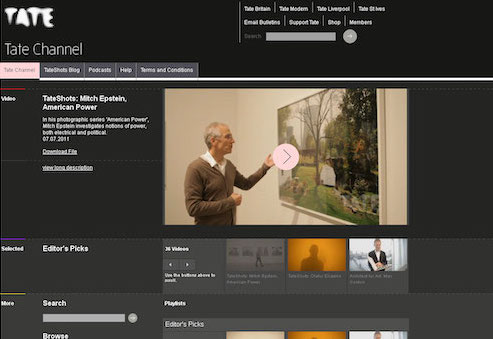

John Stack
Currently Digital Director at the Science Museum Group and trustee of Art UK. Previously principal investigator of the Heritage Connector project, Head of Digital at Tate and Editor of the Contemporary Artists Series at Phaidon Press.
Selected work


Tate Channel
Website (2009)

Selected papers
- Heritage Connector: A Machine Learning Framework for Building Linked Open Data from Museum Collections (with Kalyan Dutia)
- Heritage Connector: A Towards a National Collection Foundation Project Final Report
- The Potential and Pitfalls of Machine Learning in the Congruence Engine Context (with Jamie Unwin)
- Curating Sound in a Platform World – Insights from the #SonicFriday project (with Stefania Zardini Lacedelli and Dr Annie Jamieson)
- Finding the motivation behind a click: definition and implementation of a website audience segmentation (with Dr Elena Villaespesa)
Selected strategy documents
- Science Museum Group Digital Strategy 2022–24
- Science Museum Group Digital Strategy 2018–21 (Archived)
- Science Museum Group Digital Strategy 2015–17 (Archived)
- Tate Digital Strategy 2013–15: Digital as a Dimension of Everything (Tate Papers, Issue 19, 2013)
- Tate Online Strategy 2010–12 (Tate Papers, Issue 13, 2010)
Selected awards
- 4 Webby Awards
- 5 Lovie Awards
- 1 D&AD Pencil
- 7 GLAMi / Best of the Web Awards
- 1 MUSE Award
- 1 British Interactive Media Award
- 1 Best in Heritage Award